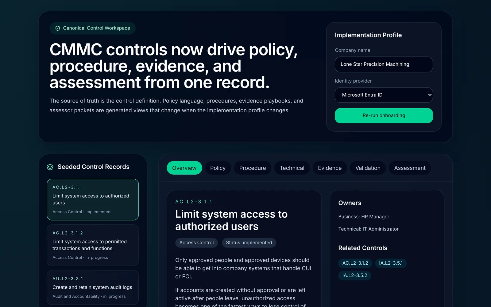
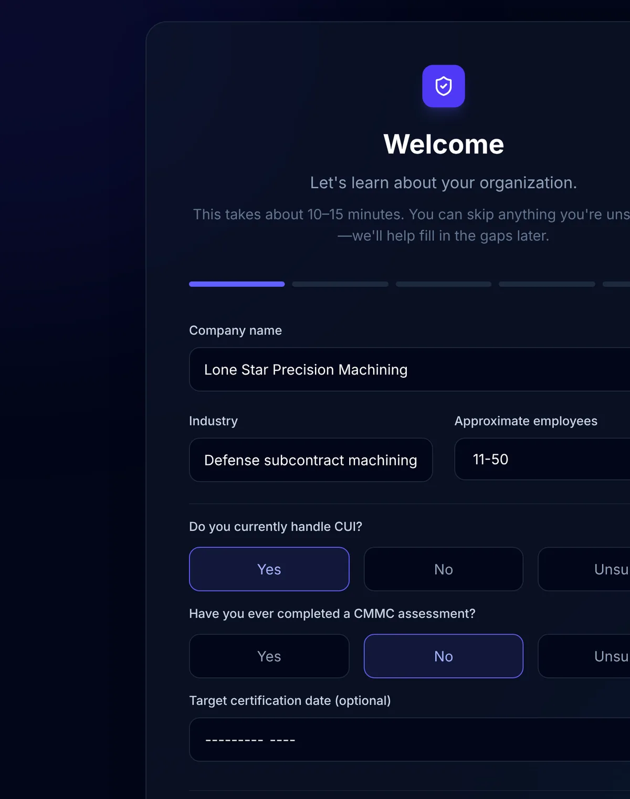
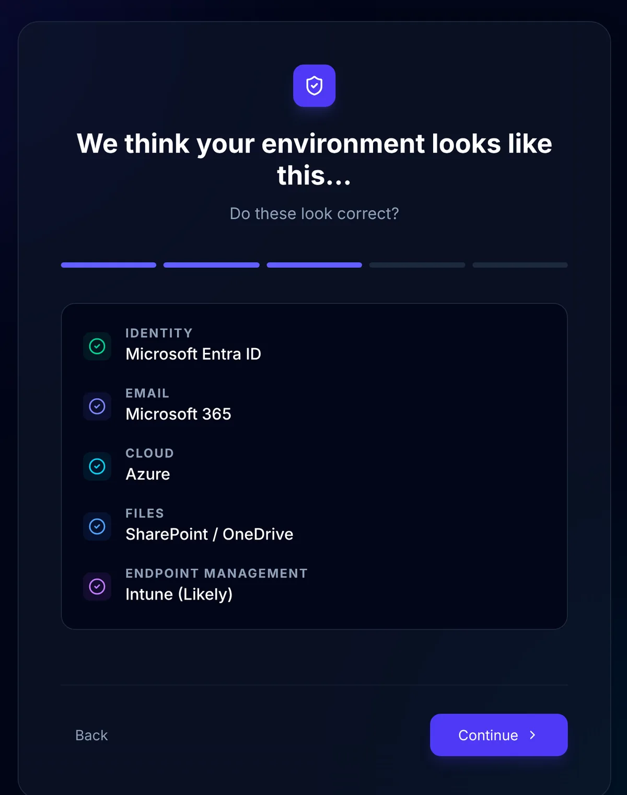
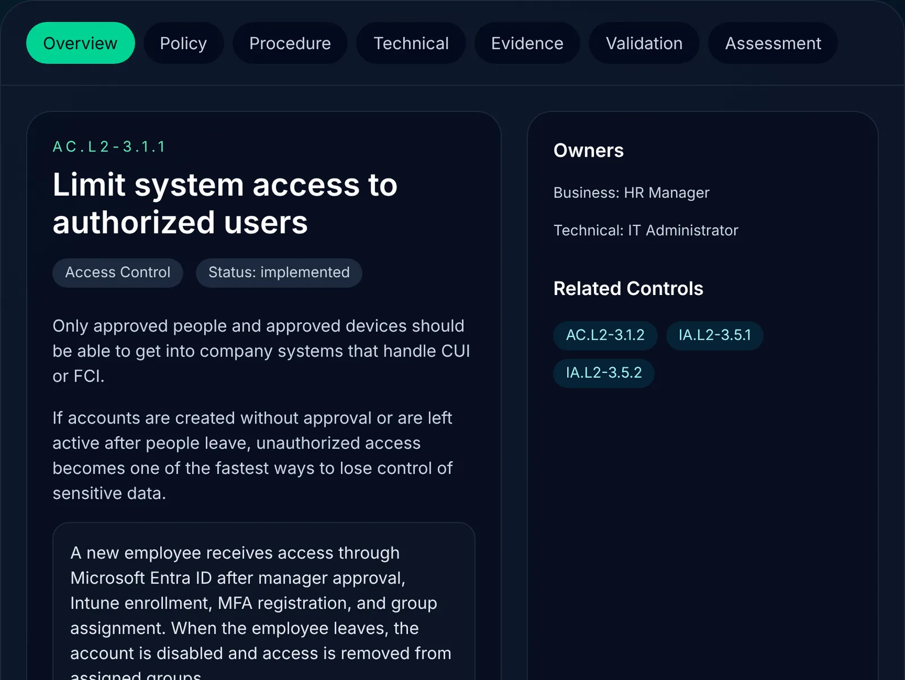
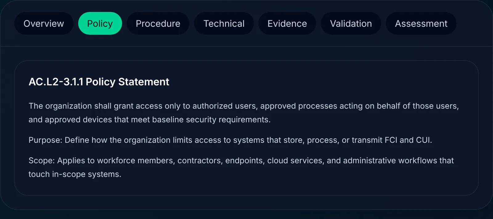
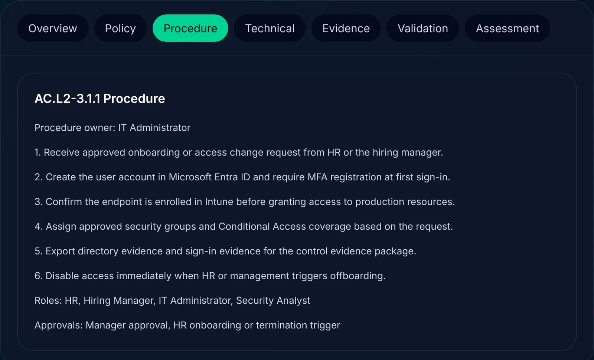
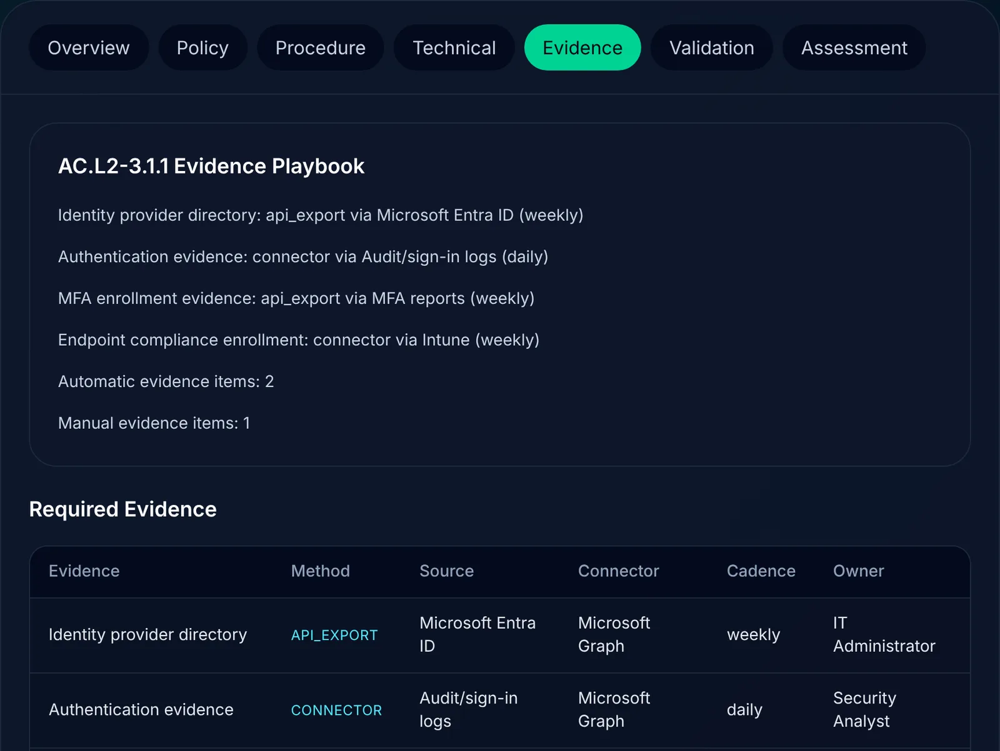
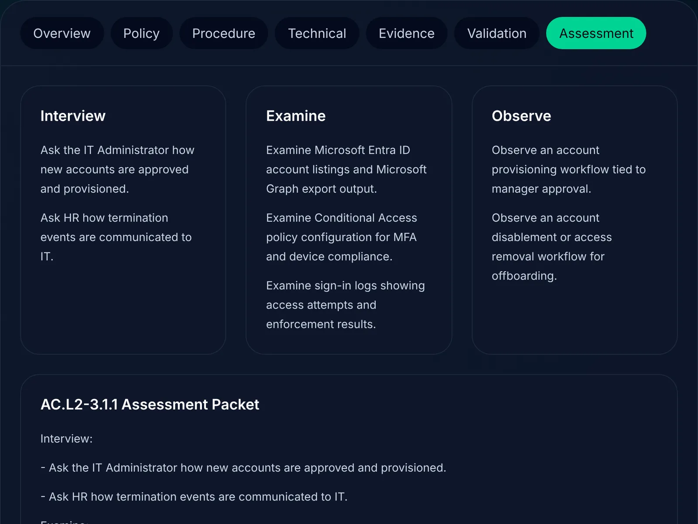
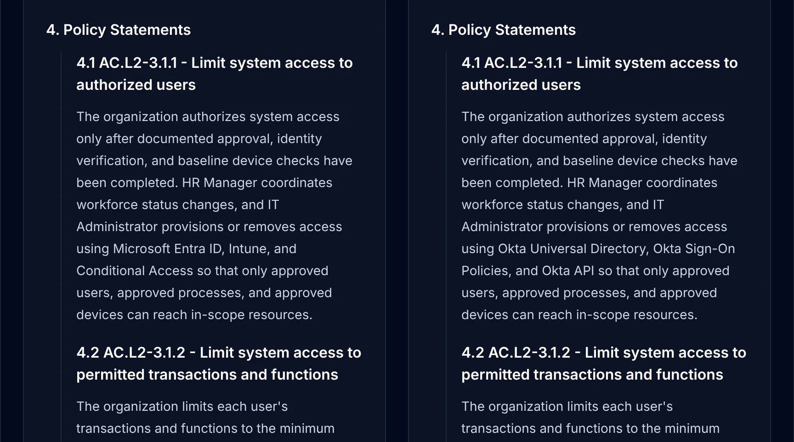
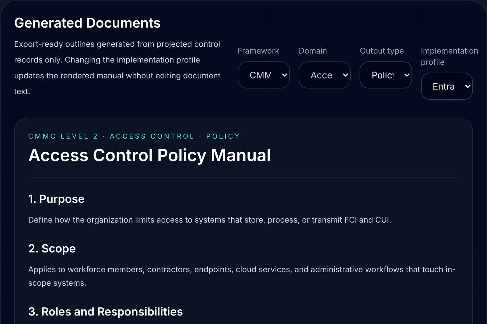

BUILT & BUILDING / 04
CMMC Controls Generator
Before a small defense contractor pays for a five-figure CMMC assessment, they should know what the assessor is going to ask for. This turns each Level 2 control into the policy, the procedure, the evidence to collect and the questions to expect, written for the systems the company already uses.

WHY IT MATTERS
- Most small contractors find out what they're missing during the audit. That's the most expensive way to learn it. This shows the gaps while there's still time and money to close them.
- One control, every document. The policy, procedure, evidence plan and assessment prep all come from the same control record, so they can't quietly contradict each other.
- Written for the tools you have. Change the identity provider and the documents rewrite with the right systems. No generic template to translate.
- Preparation, not a certificate. It gets a company ready for the assessment. It doesn't replace the assessor, and it doesn't certify anything.
HOW THE DOCUMENTS ARE MADE
No AI writes these documents. Each control is a structured record: what it requires, who owns it, what proves it. The company's setup is a set of mappings: which product handles identity, which logs show sign-ins, who approves access. Fixed rules combine the two into the policy, procedure, evidence plan and assessor prep, so the same inputs always produce the same document. Change a mapping, and every document that depends on it changes with it.
The walkthrough
ILLUSTRATIVE DATA The company is invented. Captured from the working software on a test machine. Nothing on these screens is written by AI.









HOW THIS COULD EVOLVE
From getting ready for one assessment to knowing, any day of the year, whether each control still holds.
- BUILTControl requirementEach control as a structured record: what it requires, who owns it, what proves it.
- BUILTCompany configurationOnboarding, an inferred environment, and system mappings for the company's own tools.
- BUILTImplementation guidancePolicy, procedure, technical steps and assessor prep, written for that configuration.
- PARTLY BUILTEvidence collectionWhat to collect, from where, how often and by whom is defined. Collecting it automatically from live systems is planned.
- PLANNEDVerificationThe checks are written down. Running them against collected evidence is planned.
- PLANNEDReadiness statusA current answer to "could we prove this control today?", based on verified evidence rather than self-assessment.
WHAT THIS PROVES
Control-driven compliance documents: one structured control record, combined with the company's own system mappings, produces the policy, procedure, evidence plan and assessment prep.
Built
- Three controls modelled end to end. For each, the working build produces a system-specific policy, implementation procedure, evidence requirements and assessment preparation.
- Onboarding that infers the company's environment, and an identity-provider switch (Entra or Okta) that rewrites every dependent document. The app's architecture tests pass.
Not yet
- The three controls are two in Access Control and one in Audit and Accountability. The broader catalog of 110 controls is under development.
- Evidence connectors are simulated; nothing is pulled from live systems yet.
- Not a certification, and not a substitute for an assessment by an authorized assessor.
Facing a CMMC assessment? Find out where you stand first.
ASK FOR A WALKTHROUGHThirty minutes, on a screen share or at your office in Dallas.
Or write to bluedottechnology [at] outlook [dot] com